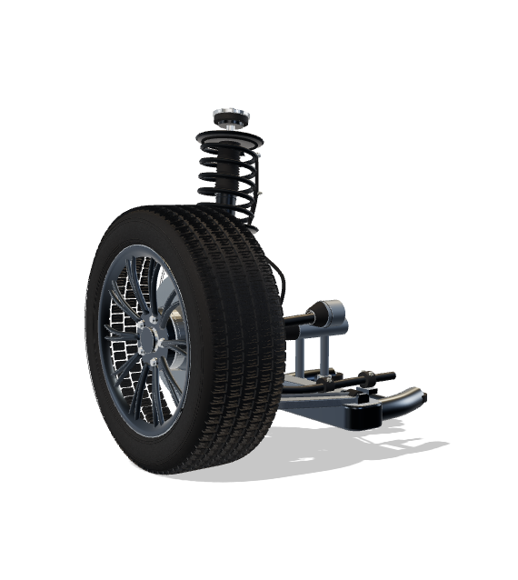
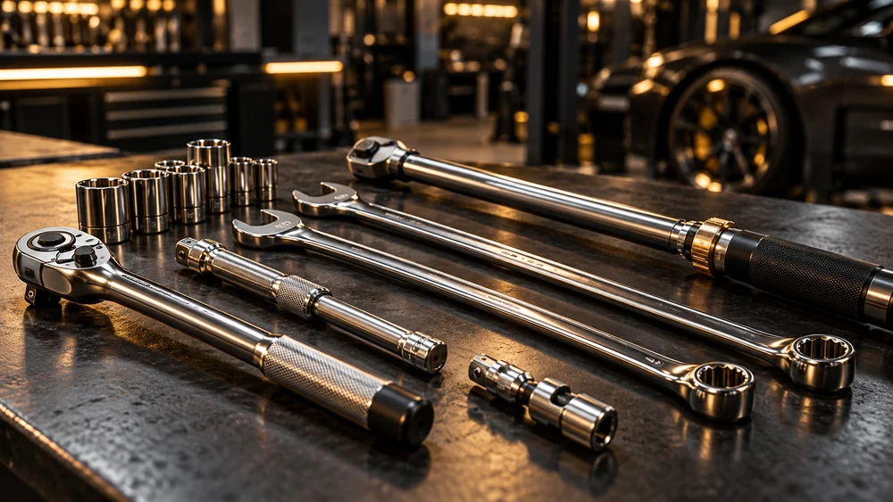
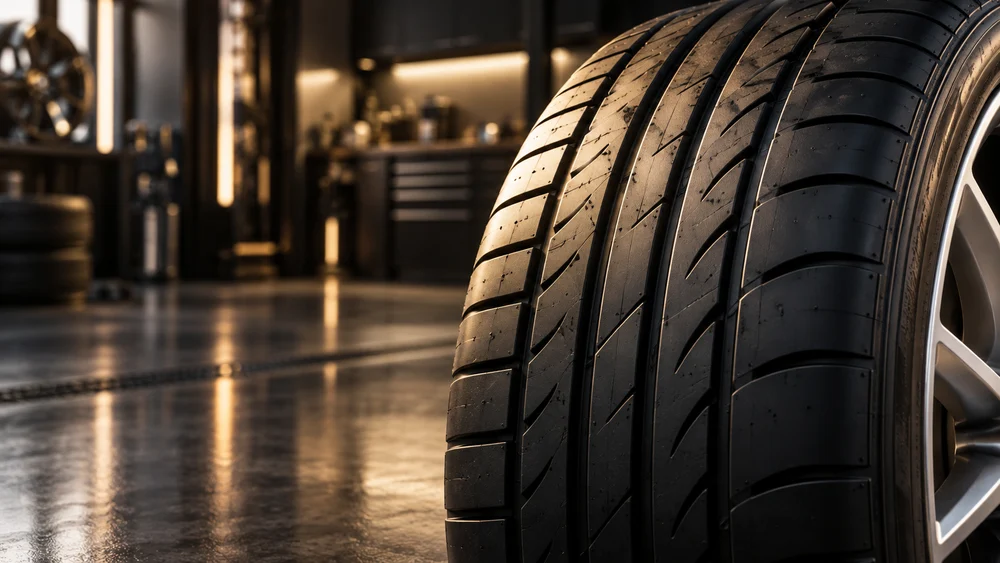

Autohaus Schmid · Seit 1993
Mobilität
mit Vertrauen.
Neuwagen. Gebrauchtwagen. Werkstatt. Reifen.
Alles aus einer Hand – in Bopfingen.
AUTOHAUS SCHMID · BOPFINGEN
Mehr als Autos.
Seit 1993.
Qualität, persönliche Beratung und Service rund um Ihre Mobilität. Mit Erfahrung und einem direkten Ansprechpartner begleiten wir Sie beim Fahrzeugkauf, in der Werkstatt und darüber hinaus.
seit 1993
Händler
in Bopfingen

MACPHERSON · VORNE RECHTS · 225/45 R18Ziehen zum Drehen · + / − für die Nähe
Illustrative Darstellung · Keine Reparaturanleitung. Federn stehen unter Spannung.
Inszenierte Engineering-Präsentation · Illustrative Bildwelt
Aktuelle Fahrzeuge
Ausgewählte Angebote. Und die ganze Welt von KGM.
Keine passenden Modelle. Bitte ändern Sie Ihre Suche.
Freigegebene Angebote und Modellpräsentationen. Preise und Verfügbarkeit bitte persönlich bestätigen lassen. Mehrmarken-Angebote ↗
UNSERE LEISTUNGEN
Alles für Ihre Mobilität.
Fahrzeuge, Werkstatt und Reifen – bei uns erhalten Sie alles aus einer Hand.
Kompetent, zuverlässig und persönlich in Bopfingen.
- Alles aus
einer Hand - Erfahrenes
Fachteam - Persönliche
Beratung - Regional
in Bopfingen
Fahrzeuge
Vielfältige Auswahl verschiedener Marken.Zu unseren Fahrzeugen
SERVICE NACH HERSTELLERVORGABEWerkstatt & Service
Kompetent, zuverlässig und professionell.Unser Serviceangebot
BERATUNG & MONTAGEReifen
Beratung und fachgerechter Reifenwechsel.Mehr zu unseren Reifen- Qualität & SicherheitFahrzeuge und professioneller Service
- Persönliche BeratungIndividuell und ehrlich
- Moderne TechnikService nach Herstellervorgaben
- Mobilität mit PerspektiveLangfristige Lösungen für die Region
Illustrative Bildwelt
Autohaus Schmid
Regional. Persönlich.
Zuverlässig.
Seit 1993 bieten wir in Bopfingen Reifen, Service, Reparaturen und Fahrzeugverkauf an. Vertrauen Sie auf jahrzehntelange Erfahrung und eine persönliche Beratung rund um Ihr Automobil.
Mehr über uns ⟶In Folge ausgezeichnet
laut Unternehmenswebsite
Sechs Modellreihen
in der Ausstellung
Persönliche Beratung
direkt in Bopfingen
Jahre Erfahrung
Seit 1993
Bereit für Ihre nächste Fahrt?
Entdecken Sie unsere Fahrzeuge oder fragen Sie
einen Termin in unserer Werkstatt an.
Gute Fahrt.
Immer.
Wir sind für Sie da
Ihr direkter Weg zu uns.
Fahrzeug, Werkstatt oder Reifen: Wählen Sie Ihr Anliegen. Wir besprechen die nächsten Schritte persönlich mit Ihnen.
Autohaus und Reifendienst Stefan Schmid
Gewerbehof 1 · 73441 Bopfingen
07362 7700
info@schmid-bopfingen.de
Fax: 07362 9655-22
Öffnungszeiten
Montag–Freitag: 08:00–12:00 und 13:00–18:00 Uhr
Nach Angaben der Originalwebsite; Feiertage ausgenommen.
Ihr Weg zu uns